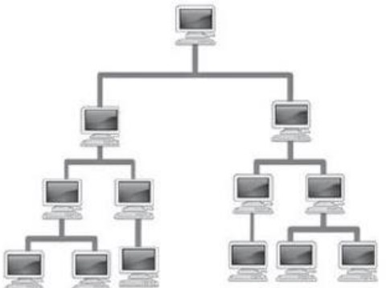

- Redes domésticas pequeñas.Las oficinas pequeñas y en el hogar permiten que una computadora dentro del hogar o una oficina remota se conecte a una red corporativa.
- Redes medianas a grandes.Incluyen muchos lugares con cientos o miles de computadoras interconectadas.
- Redes mundiales.Conectan cientos de millones de computadoras en todo el mundo como internet.

Objetivos de una red de computadoras.
- Hacer que todos los programas, datos y equipo estén disponibles para cualquiera de la red que así lo solicite sin importar la localización física del recurso y del usuario.
- Compartir información y recursos entre equipos interconectados independientemente de su ubicación geográfica, estableciéndose, así como un poderoso medio de comunicación.
- Proporcionar una alta fiabilidad, al contar con fuentes alternativas de suministro.
- Ahorro económico.
| Ventajas | Desventajas |
|---|---|
|
Compartir sotfware y hardware.
Compartir e intercambiar archivos entre los equipos. Centralizar programas de gestión (los usuarios pueden acceder al mismo programa para trabajar en el simultáneamente)Realizar copias de seguridad automáticamente. Realizar copias de seguridad automáticamente. Organización efectiva. Mejorar la comunicación y la disponibilidad de infromacion. Una vez implementada son económias y ahorran tiempo. Comunicación rápida y eficiente. Posibilidad de manejo y control a distancia de nuestra computadora. Mejora la forma de trabajo individual y en equipo. |
Carecen de independencia.
Existen muchos riesgos por lo que se deben tomar muchas medidas de seguridad. Se requiere personal capacitado para la administración y el mantenimiento de las redes. El costo para la implementación inicial es alto. Costos de operación y mantenimiento. Si se depende de la conexión a internet y falla, se pueden ver las consecuencias en tiempo,dinero y esfuerzo |
Infrastructura de red.
Cada computadora conectada a una red se denomina host o terminal.
Los servidores son computadoras que proporcionan información a los terminales de la red. Por ejemplo: servidores de correo electrónico, servidores web o servidores de archivos.
Los clientes son computadoras que envían solicitudes a los servidores para recuperar información, como una página web desde un servidor web o un correo electrónico desde un servidor de correo electrónico.
La infraestructura de red son todos los recursos que hacen posible la conectividad, la gestión, las operaciones comerciales y la comunicación de la red o Internet... La infraestructura de red comprende hardware y software, sistemas y dispositivos, y permite la informática y la comunicación entre usuarios, servicios, aplicaciones y procesos.
Componentes de red
-
Dispositivos:
- Terminales: Es el punto donde un mensaje se origina o se recibe.
- Intermediarios: Son los que interconectan terminales en una red. Otras funciones son: la administración de datos a medida que fluyen en una red, volver a generar y transmitir las señales de datos, conservar información acerca de las rutas que existen a través de la red y notificar a otros dispositivos los errores y las fallas de comunicación.
-
Medios:Permite la comunicación de la red, es de cir, que un mensaje viaje desde el origen hacia el destino.
- Cable de cobre.
- Fibra óptica.
- Inalámbricos.
- Servicios: Son las actividades que satisfacen las necesidades de usuario.


Los datos se originan con un dispositivo final,fluyendo por la red y llegan a un dispositivo final.
Medios de red.
| Medios. | Ventajas. | Desventajas. |
|---|---|---|
| Cable coaxial. |
Permite la transmisión de voz,datos y video de manera simultánea.
Tiene un bajo costo y su instalación es censilla y rápida. Cuenta con una banda ancha con capacidad de 10 Mb/segundo. |
No hay modelación de frecuencias.
Hace uso de conectores especiales para la conexión física. Ofrece poca inmunidad frente a los ruidos, aunque pueda mejorarse con filtros |
| Cable de par trenzado (UTP, STP, FTP) . |
Dan muy buenas prestaciones.
Facilidad de utilización e instalación. Bajo costo de fabricación y adquisición. Gran capacidad de transmisión de datos en redes de área local. Rápida conectividad y actualizable. |
No son inmunes al ruido.
Ancho de banda limitado. Distancia limitada y necesidad de repetidores. Tasas de error a considerar en altas velocidades. |
| Fibra óptica |
Ocupa poco espacio.
Fácil instalación. Es liviana. Presenta una gran resistencia. Es más ecológica. Inmune a interferencias electromagnéticas. Veloz, eficaz y segura. |
Mas costoso que los medios de cobre para la misma distancia
Son frágiles. Requiere de conversores. Envejece ante la presencia de agua. |
| Inalámbrico |
Accesibilidad.
Mayor cobertura. Flexibilidad. Faácil intalación. Móvil y portátil. Escalabilidad Eficiencia. |
Seguridad.
Ancho de banda limitada. Velocidad Son propensas a las interferencias. Alncance. |
Tipos de redes
| Red | Definición | Alcance |
|---|---|---|
| Red de área local (LAN). | Es una red que se limita a un área relativamente pequeña tal como un cuarto, un solo edificio. | 200 m a 1 km. |
| Red de área amplia (WAN). | Son redes de informáticas que se extienden sobre un área geográfica muy extensa,país o continentes,utilizando medios como:satélites, cables interoceánicos y fibra óptica. | Miles de kilómetros. |
| Red de área personal (Pan). | Es una red de ordenadores usada para la comunicación entre los dis´positivos de la computadora cerca de una persona. | 10 metros. |
| Red de área metropolitana (MAN). | Es una red de alta velocidad (banda ancha)que da cobertura en un área geográfica más extensa, por ejemplo, una red que interconecte los edificios públicos de un municipio dentro de la localidad por medio de fibra optica. | Hasta 50 km. |
| Red de área global (GAN). | Utilizan la infrastructura de fibra de vidrio de las redes de área amplia (Wide Area Networks) y las agrupan mediante cables submarinos internacionales o transmisión por satélite. | 1 a 3 km. |
| Red de área de campus (CAMP). | Es una red inalámbrica para comunicar varios edificios que se encuentran a más de 1 km en el mismo campus o empresa. | 1 a 3 km. |
| Red de área de almacenamiento (SAN). | Es una red propia para las empresas que trabajan con servidores y no quieren perder rendimiento en el ráfico de usuario, ya que manejan una enorme cantidad de datos. | Ilimitado. |
Tipos de topologías.
Topología de bus.
Todos los nodos de la red se conectan a un solo cable principal, que sirve a todos los dispositivos. Este es uno de los tipos de redes más fáciles de configurar, pero al agregar demasiados dispositivos puede afectar la velocidad de la red a medida que la red tronca se congestiona. Este tipo de red también es increíblemente frágil, ya que una falla en cualquier punto de la red desconectara toda la red.

Tepología de anillo
Son redes punto a punto en las que cada nodo está conectado a su vecino inmediato en ambos lados, con datos que viajan alrededor del anillo en una dirección hasta que alcanza en nodo correcto. La falla de un solo nodo provocara una interrupción en toda la red. Esta forma de red no requiere un servidor para administrarla.

Topología de estrella.
Todos los nodos se conectan a un solo punto central, como un enrutador. El nodo central actúa con único punto de falla y un posible cuello de botella de tráfico, pero también es uno de los diseños más fáciles de diseñar y expandir.

Topología de arbol.
Las tecnologías de árbol son una evolución del modelo de estrella e involucran múltiples redes estelares unidas por un bus central. Las redes de árbol generalmente se consideran como la topología más escalable, ya que es fácil expandirse mediante la adición de redes de estrellas adicionales.
Topología de malla.
Es cuando hay más de una conexión entre nodos. Esta puede ser una topología de "malla completa",en la quecada nodo está vinculado a cada otro nodo, o una malla parcial, en la que solo algunos nodos utilizan conexiones múltiples. Esta forma de red es compleja de configurar y administrar, pero incluye un alto nivel de redundanciacontra fallas de red.

Mayor información sobre topologías de red
Internet (International Network).
Internet es un conjunto descentralizado de redes de comunicación interconectadas, que utilizan la familia de protocolos TCP/IP, lo cual garantiza que las redes físicas heterogéneas que la componen constituyen una red lógica única del alcance mundial.
Servicios de internet.
- Videoconferencias: Permite que las personas de diferentes lugares se comuniquen mediante video y audio.
- Foros de difusión: Permite la comunicación interactiva entre dos o más personas, los usuarios pueden participar en una conversación con toda clase o el grupo.
- Correo electrónico o e-mail: Es un medio de comunicación digital por escrito que aprovecha la tecnología multimedíatica de internet para el envió en deferido de mensajes más o menos largos y dotados o no de adjuntados, entre dos o más interlocutores diferentes.
- Conversación en línea o chat: Designa una comunicación escrita realizada de manera instantánea mediante el uso de software y a través de internet entre dos o más personas ya sea de manera pública a través de chats públicos o privados.
Introducción a las paginas web.
Una página web, página electrónica o página digital es un documento digital de carácter multimediático (capaz de incluir audio, video, texto y sus combinaciones), adaptado a los estándares de la World Wide Web (WWW) y a la que se puede acceder a través de un navegador Web y una conexión activa a internet. Las páginas Web se encuentran almacenadas en servidores a los que es posible acceder velozmente gracias a un sistema de protocolos de comunicación (HTTO). Las páginas Web se encuentran programadas en un formato HTML o XHTML, y se caracterizan por su relación entre unas y otras través de hipervínculos. Las páginas Web cumplen con la tarea de brindar información de cualquier índole y en cualquier estilo o grado de formalidad. Algunos permiten distintos grados de interacción entre usuarios o con alguna institución, como son las páginas de foros, servicios de citas o redes sociales, las páginas de compra y venta de bienes, las páginas de consulta o de contacto con empresas, instituciones gubernamentales o con ONG, e incluso de páginas de soporte técnico especializado.
Tipos de páginas de web.
| Tipo de página | Estatica | Dinamica |
|---|---|---|
| Características |
Se programan en lenguaje HTML.
No permite a la interacción con el usuario. Son informativas, documentales y no interactivas. |
Se programan en lenguaje PHP.
Permiten la interacción con el usuario. Ofrece una respuesta a los requerimientos del usuario. |
Conceptos básicos de páginas web.
- Página web: Documentos realizado en HTML y que es parte de un sitio Web. Aparte del HTML se pueden utilizar otros lenguajes complementarios como PHP, ASP, JavaScript.
- Sitio Web: Página principal y sus otras páginas, gráficos, documentos, multimedia y otros archivos asociados que se almacenan en un servidor Web o en el disco duro de un equipo.
- Navegador Web: Es un software de aplicación que sirve para abrir páginas Web en una ruta local o provenientes de la internet.
- HTML (Lenguaje de Mercado de Hipertexto): Lenguaje estándar de marcas empleado para documentos de World Wide Web.
- Hosting: Hospedaje web. Espacio de disco donde se almacenan las páginas webs para que sean accesibles a través de internet
- Dominio: Dirección web asociada a una página web.
- URL (Universal Resource Location/Localizador de un recursos universales): Cadena que proporciona la dirección de internet de un sitio Web o un recurso del World Wide Web , junto con el protocolo mediante el cual se tiene acceso al sitio o al recurso.